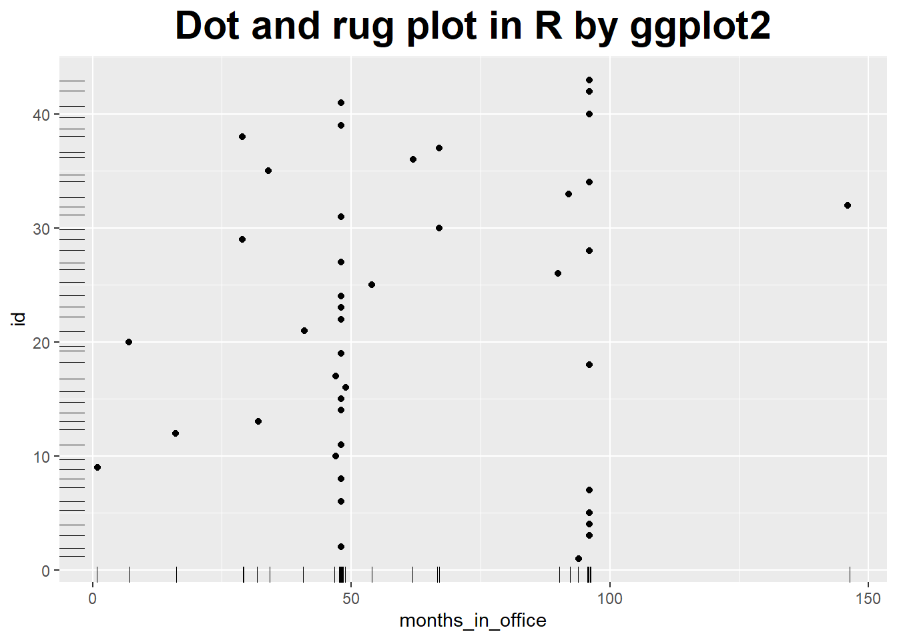
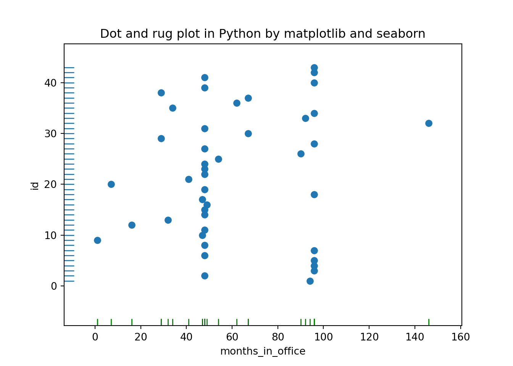
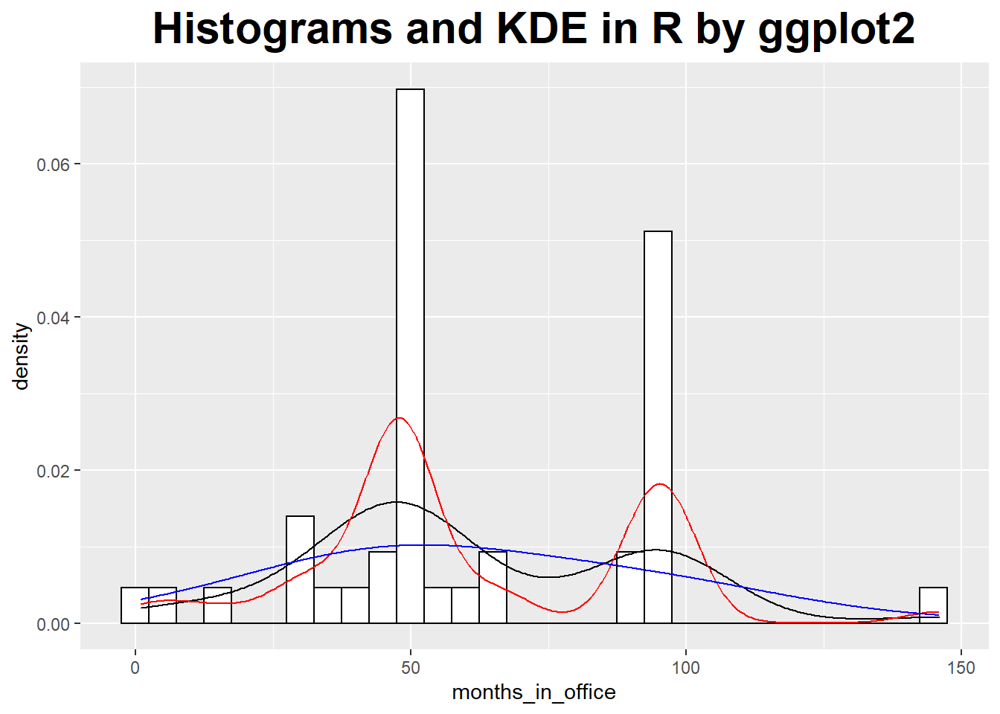
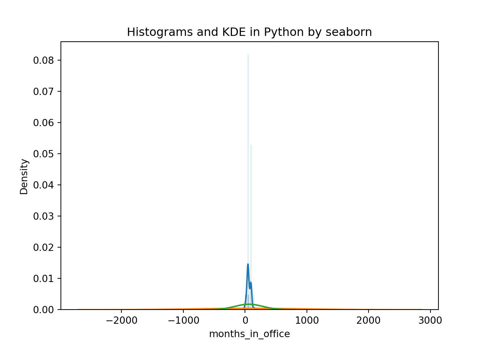
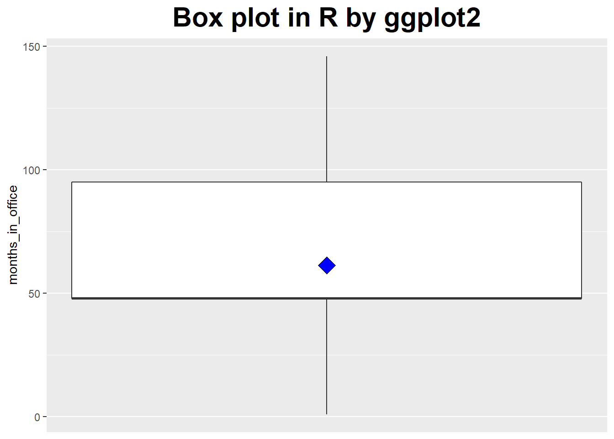
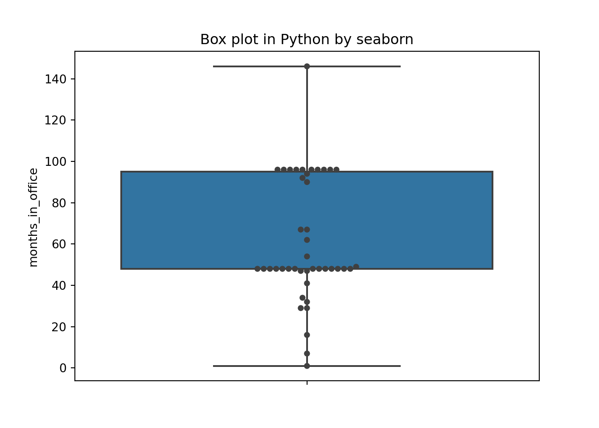
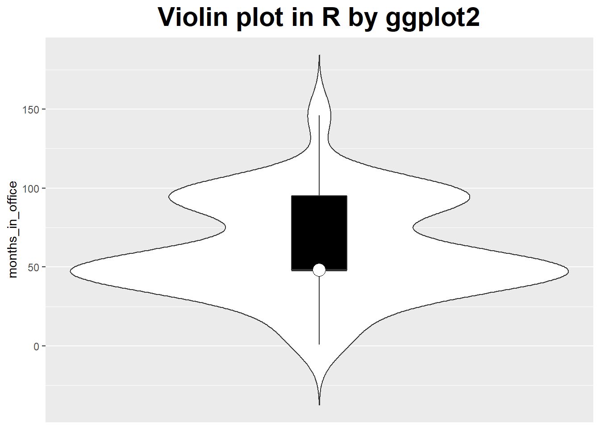
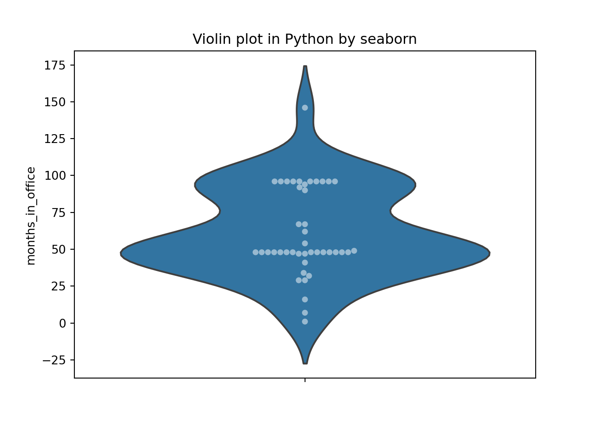

Imagine your boss comes to you and says: “Here are 50GB of logfiles - find a way to improve our business!”
What is your plan?
The first step is: look at the data by plotting it in different ways and looking at graphs.
Looking at data, you will notice things - the manner in which one quantity varies with another, or the large number of outliers …
I don’t know what you will find, but there is no doubt: if you look at data, you will find some hints!
These observations should lead to some idea.
“Every seven days we have a production run that has twice the usual defect rate, and it’s always on a Thursday.”
To make these ideas concrete and suitable for further work, it is often useful to express them in a model, such as predictive model.
You can predict that next Thursday the defect rate will be high again.
Sometimes, you may already be finished at this point: you found out enough to help improve the business.
At other times, you may need to work a little harder.
A single Variable: Shape and Distribution
Let’s look at the examples which concerns a relatively small data set: the number of months that the various American presidents have spend in office.
Dot and Rug Plots
### Dot and rug plot in R by ggplot2
months_in_office <- c(94, 48, 96, 96, 96, 48, 96,
48, 1, 47, 48, 16, 32,
48, 48, 49, 47, 96, 48, 7,
41, 48, 48, 48, 54, 90,
48, 96, 29, 67, 48, 146,
92, 96, 34, 62, 67, 29,
48, 96, 48, 96, 96)
df_office <- data.frame(id = 1:length(months_in_office), months_in_office)
library(ggplot2)
ggplot(df_office, aes(y = id, x = months_in_office)) +
geom_point() +
geom_rug(position = "jitter", size = .2) +
ggtitle("Dot and rug plot in R by ggplot2") +
theme(plot.title = element_text(hjust = 0.5, size = rel(2), face = "bold"))
## Dot and rug plot in Python by matplotlib and seaborn
import pandas as pd
import matplotlib.pyplot as plt
import seaborn as sns
months_in_office = [94, 48, 96, 96, 96, 48, 96,
48, 1, 47, 48, 16, 32,
48, 48, 49, 47, 96, 48, 7,
41, 48, 48, 48, 54, 90,
48, 96, 29, 67, 48, 146,
92, 96, 34, 62, 67, 29,
48, 96, 48, 96, 96]
df_office = pd.DataFrame(data = {'id' : range(1, len(months_in_office) + 1),
'months_in_office' : months_in_office})
plt.close('all')
plt.scatter(df_office.months_in_office, df_office.id)
sns.rugplot(df_office.months_in_office, color="g")
sns.rugplot(df_office.id, vertical=True)
plt.xlabel('months_in_office')
plt.ylabel('id')
plt.title('Dot and rug plot in Python by matplotlib and seaborn');
plt.show() We see the values of 48 and 96 months, which correspond to one and two full four-year terms in office, occur more frequently than others.
Even in this simple example, a plot reveals both something expected (the clusters at 48 and 96 months) and the unexpected (the larger number of points outside those clusters).
Histograms and Kernel Density Estimates Curve
### histograms and kernel density estimates
ggplot(df_office, aes(x = months_in_office, y = ..density..)) +
geom_histogram(fill = 'white', colour = 'black') +
geom_density() +
geom_line(stat = 'density', adjust = 0.5, colour = 'red') +
geom_line(stat = 'density', adjust = 2, colour = 'blue') +
ggtitle('Histograms and KDE in R by ggplot2') +
theme(plot.title = element_text(hjust = 0.5, size = rel(2), face = "bold"))
## Histograms and Kernel Density Estimates in Python by seaborn
# import pandas as pd
# import matplotlib.pyplot as plt
# import seaborn as sns
plt.close('all')
sns.distplot(df_office.months_in_office, bins = 30)
sns.kdeplot(df_office.months_in_office, bw=30.0, label="Bandwidth: 30")
sns.kdeplot(df_office.months_in_office, bw=7.5, label="Bandwidth: 7.5")
plt.title('Histograms and KDE in Python by seaborn');
plt.show()
Only When Appropriate: Summary Statistics and Box Plots
Mean, median, and related summary statistics apply only to distributions that have a single, central peak.
If this basic assumption is not fulfilled, then conclusions based on simple summary statistics will be wrong.
Even worse, nothing will tip you off that they are wrong: the numbers will look quite reasonable.
Mean and standard deviation are easy to calculate, and have certain nice mathematical properties - provided the data is symmetric and does not contain crazy outliers.
A different set of summary statistics that is both more flexible and more robust is based on the concepts of median and quantiles or percentiles.
The median is a measure for the location of the distribution, and we can use percentiles to construct a measure for the width of the distribution. Probably the most frequently used quantity for this purpose is the inter-quartile range (IQR), which is the distance between the 75th percentile and 25th percentile.
When should you favor median and percentile over mean and standard deviation?
Whenever you suspect that your distribution is not symmetric or has important outliers.
### box plot
ggplot(df_office, aes(x = 1, y = months_in_office)) +
geom_boxplot() +
scale_x_continuous(breaks = NULL) +
theme(axis.title.x = element_blank()) +
stat_summary(fun = 'mean', geom = 'point', shape = 23, size = 5, fill = 'blue') +
ggtitle('Box plot in R by ggplot2') +
theme(plot.title = element_text(hjust = 0.5, size = rel(2), face = "bold"))
### Box plot in Python by seaborn
plt.close('all')
sns.boxplot(y = "months_in_office", data = df_office)
sns.swarmplot(y = "months_in_office", data = df_office, color=".25")
plt.title('Box plot in Python by seaborn')
plt.show() The box plot emphasizes the overall structure of the data sets and make it easy to compare the data sets based on their location and width.
At the same time, it also loses much information.The KDE gives a more detailed view of the data.
Violin Plot
Violin plot, which combines a box plot with the kernel density estimation.
### violin plot
ggplot(df_office, aes(x = 1, y = months_in_office)) +
geom_violin(trim = FALSE, scale = 'count') +
geom_boxplot(width = .1, fill = 'black', outlier.colour = NA) +
scale_x_continuous(breaks = NULL) +
theme(axis.title.x = element_blank()) +
stat_summary(fun = 'median', geom = 'point', shape = 21, size = 5, fill = 'white') +
ggtitle('Violin plot in R by ggplot2') +
theme(plot.title = element_text(hjust = 0.5, size = rel(2), face = "bold"))
### Violin plot in Python by seaborn
plt.close('all')
sns.violinplot(y = "months_in_office", data = df_office, scale = "count")
plt.title('Violin plot in Python by seaborn')
plt.show()### Violin plot in Python by seaborn
plt.close('all')
sns.violinplot(y = "months_in_office", data = df_office, inner = None)
sns.swarmplot(y = "months_in_office", data = df_office, color="w", alpha=.5)
plt.title('Violin plot in Python by seaborn')
plt.show() Referenced:
Welcome your advice and suggestion!
Just record, this article was posted at linkedin, and have 153 views to November 2021.